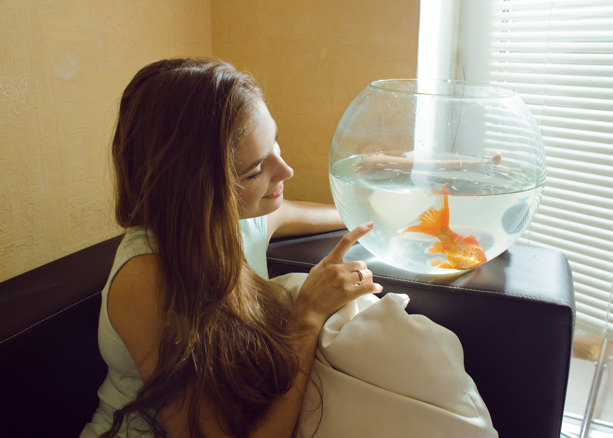

During the summer, our rabbit, Tonto, began to have severe redness and itching on his belly and feet. I'm very thankful to the veterinarians and staff at Wisdom for the excellent care Tonto received, and for nipping his allergies in the bud, so to speak.When Samantha, our Siamese cat, began sleeping all the time and urinating excessively, we brought her to see the specialists at Wisdom. Now, two years later, Samantha is still free from any complications of diabetes, and her blood sugar regularly tests normal.The staff at Wisdom worked tirelessly to determine why our three-year old Golden Retriever, Roxie, started going into sudden kidney failure. They stabilized her and provided fluids until her kidneys were again functioning normally.

Wisdom Pet Medicine is the only clinic around that will even book pet fish for appointments. When our 13-year old Comet goldfish, McAllister, turned from silvery white to an angry red, we called around, urgently trying to find a veterinarian who could help. Wisdom not only got us in the same day, but also was able to diagnose McAllister as having a severe case of septicemia.